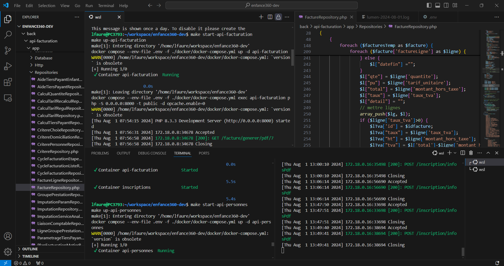
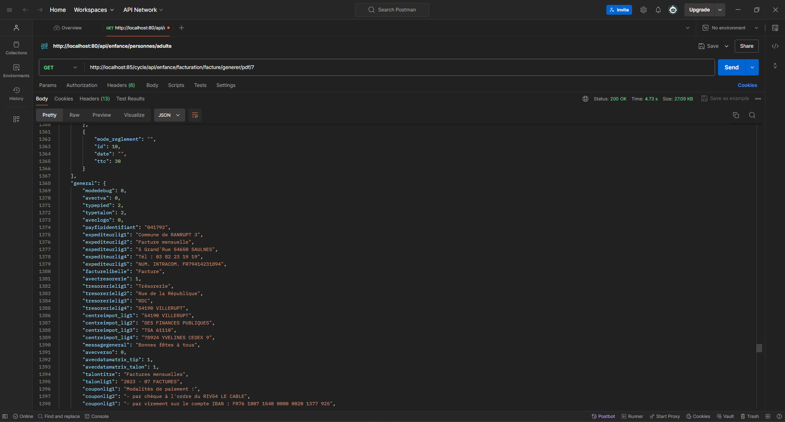
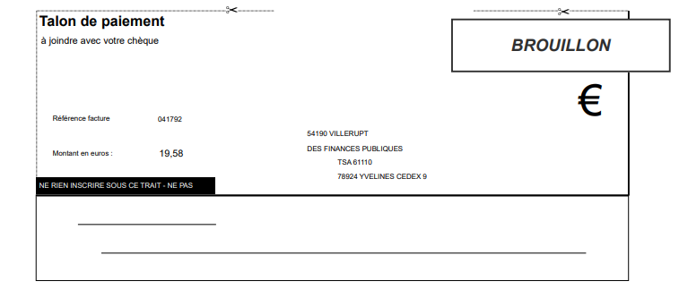
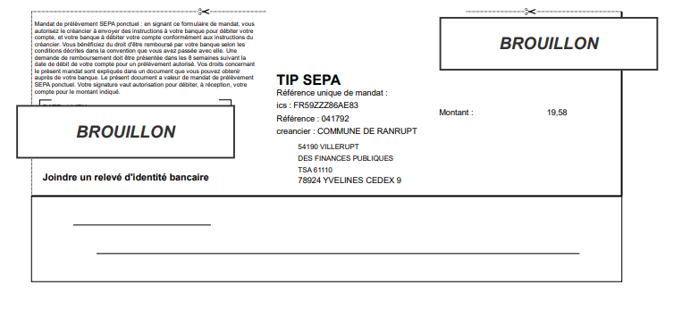
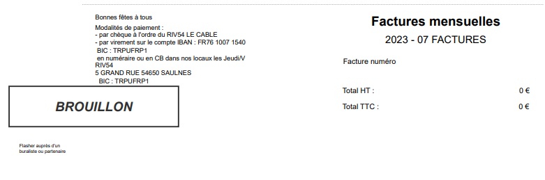
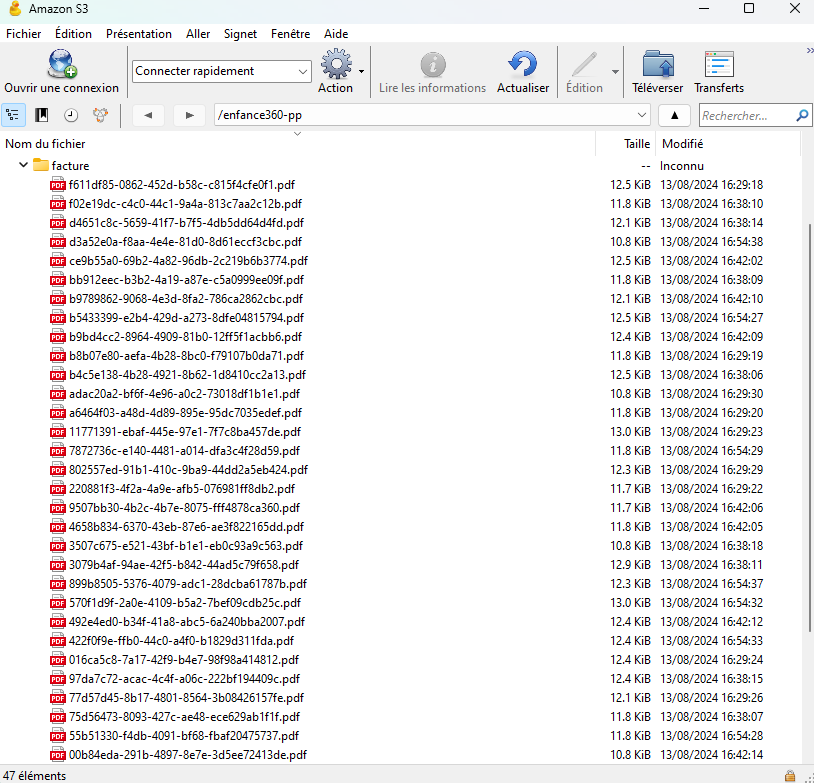
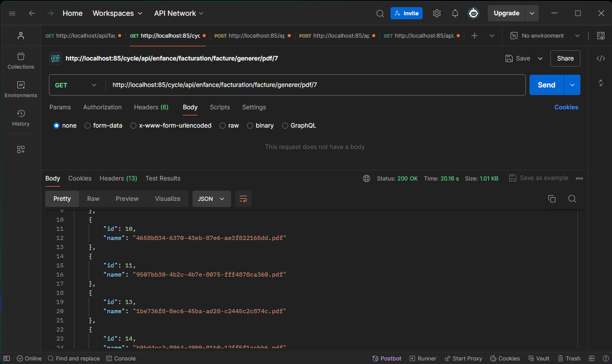
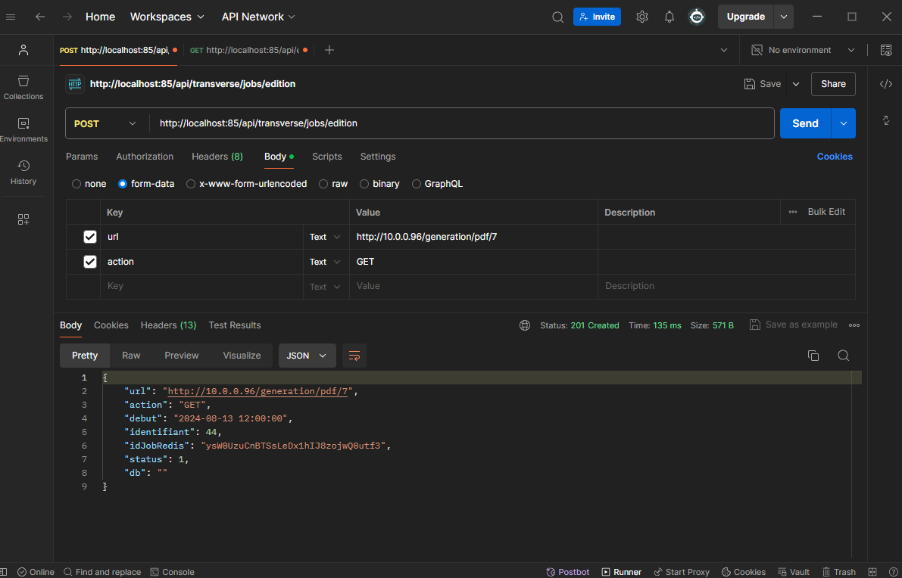
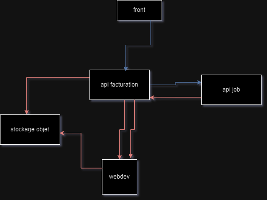

J'ai eu dans un premier temps, une présentation de l'entreprise SISTEC ainsi que de JVS par visio Teams. Cette introduction m'a permis de mieux comprendre le contexte et les objectifs du projet. Et dans un second temps, nous avons configuré le réseau manuellement ainsi que l'environnement pour avoir Docker et lancer les API opérationnelles.
Lancement des images grâce à Docker
Récemment, j'ai entrepris de modifier une API Laravel, principalement pour améliorer la transmission des informations via JSON, afin de les rendre plus compatibles avec WebDev. Cette modification était essentielle pour faciliter l'intégration des données entre Laravel et WebDev, deux technologies que j'utilise régulièrement dans mes projets.
Voici un extrait d'une réponse JSON de l'API pour 10 factures grâce à Postman :
Pour renforcer mes compétences en développement, j'ai suivi une formation intensive de deux semaines sur WinDev et WebDev. Bien que j'aie déjà eu un bon niveau de compréhension de ces outils, cette formation m'a permis d'apprendre quelques astuces supplémentaires qui ont considérablement amélioré mon efficacité. J'ai ainsi pu maîtriser les aspects avancés de ces environnements de développement, ce qui m'a préparé à des projets plus complexes.
Cependant, j'ai rencontré plusieurs difficultés, notamment l'apprentissage de WinDev à partir de zéro. WinDev étant en français, il était parfois déroutant de voir des termes comme "procédure" au lieu de "fonction". De plus, la création des états et la mise en conformité avec la réglementation SEPA (Titre Interbancaire de Paiement au format SEPA, TIPSEPA et le Talon Optique à 2 lignes, TO2L) nécessitaient une précision rigoureuse et une attention aux détails pour respecter le cahier des charges.
Nous avons ici un extrait de code en WLANGUAGE sur WebDev :

Avec mes nouvelles compétences en WebDev, j'ai créé un état d'édition pour générer des PDF de factures. Ce processus impliquait la création d'entêtes, de tableaux pour les lignes d'articles, ainsi que des sections spécifiques pour la TVA et le règlement des factures. Une attention particulière a été portée à la mise en page du talon de paiement SEPA, en respectant strictement les normes en vigueur. Chaque élément a été positionné avec précision, et les calculs d'espaces et de marges ont été réalisés pour assurer une conformité totale.
L'un des défis de ce projet a été de mettre en conformité les factures avec la réglementation SEPA. Cela impliquait non seulement de s'assurer que toutes les informations obligatoires étaient présentes, mais aussi que le formatage et l'agencement respectaient les directives spécifiques. J'ai dû calculer avec précision les espaces et les marges, et positionner les informations à des endroits exacts pour garantir que les documents étaient conformes aux standards SEPA.
Voici le cahier des charges que j'ai dû respecter
Pied de page, talon à 2 lignes optiques :
Pied de page, TIPSEPA :
Pied de page, REGI :
Pour les données des états WebDev, j'ai exploré plusieurs pistes telles que passer par des variables, importer du JSON, connecter la base de données PostgreSQL directement, sérialiser et désérialiser l'API, et faire des requêtes SQL. Finalement, nous avons opté pour une table mémoire pour garder le job métier dans Laravel. Nous avons importé un fichier JSON mis dans le stockage objet au lieu de directement sur l'API à cause de la complexité. Cependant, j'ai dû faire face à un problème de "JSON non valide", ce qui nous a conduits à utiliser un fichier texte contenant tout le JSON à importer.
Pied de page, talon optique :
Enfin, j'ai mis en place un serveur d'édition dédié à l'enregistrement des PDF. Ce serveur, configuré avec Apache, écoute sur le port 80. Cependant, pour éviter tout conflit avec l'API existante, j'ai déplacé cette dernière sur le port 85. De plus, pour le stockage des PDF générés, j'ai intégré le service de stockage d'objets AWS S3. J'ai configuré des clés d'accès, un bucket spécifique, et une URL dédiée pour stocker non seulement les PDF mais aussi les informations JSON des factures issues de l'API. Cette configuration permet une gestion efficace et sécurisée des documents générés.
Le réglage des ports a été un autre défi, car j'avais l'API Laravel et le serveur WebDev configurés sur le port 80. Pour résoudre ce problème, j'ai déplacé l'API Laravel sur le port 85.
Voici Cyberduck qui est connecté au stockage objet S3 :
et voici donc la réponse JSON de webdev, afin de se retrouver dans le stockage objet :
Dans le cadre de l'amélioration de notre infrastructure, j'ai implémenté une API existante pour gérer les files d'attente des requêtes. Cette API est cruciale pour garantir que les demandes sont traitées de manière ordonnée et efficace, même sous forte charge. L'utilisation d'une file d'attente permet de s'assurer que chaque requête est gérée sans surcharger le système, améliorant ainsi la performance globale.
L'API traite chaque requête en la plaçant dans une file d'attente, puis en la traitant séquentiellement, ce qui évite les conflits et les temps d'attente excessifs.
Ce système garantit une meilleure répartition des ressources et une gestion optimisée des requêtes, notamment dans des environnements où la charge de travail peut varier considérablement.
Voici un extrait de reponse JSON de l'API job :
Architecture de l'API pour la gestion des files d'attente :
Malgré les nombreux défis rencontrés, j'ai pu surmonter tous les problèmes. J'ai apprécié l'expérience, mais coder en WLanguage grâce à WebDev n'est pas mon fort. Que ce soit en français ou à cause de sa documentation qui ressemble à un magazine porno tel que Playboy, ce n'était pas idéal pour moi. En revanche, j'ai bien aimé utiliser Laravel et les instances S3 pour le stockage objet, car cela pourra me servir à l'avenir. J'avais également quelques facilités du côté de Laravel et de Docker, car j'avais déjà réalisé un projet de cours où j'ai utilisé Laravel avec Eloquent, l'ORM de Laravel, et Docker dans un autre projet.
Axes d'amélioration :
- Approfondir mes compétences en WLanguage pour être plus à l'aise avec WebDev.
- Explorer davantage les fonctionnalités avancées de Docker pour une gestion plus efficace des conteneurs.
- Continuer à me former sur les technologies de stockage objet comme AWS S3 pour optimiser leur utilisation dans les projets futurs.
- Revoir les bonnes pratiques de gestion des ports et des configurations serveur pour éviter les conflits.